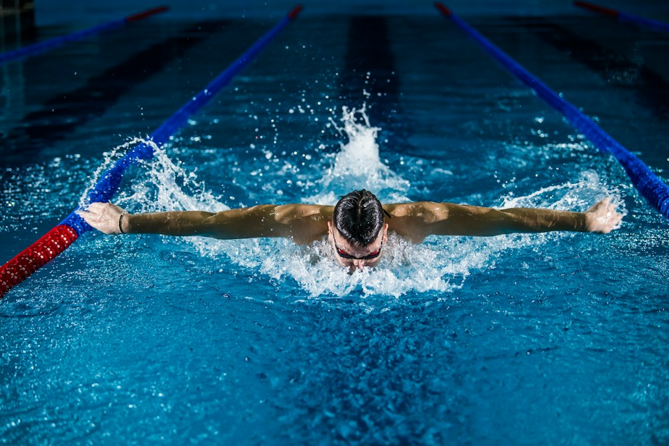
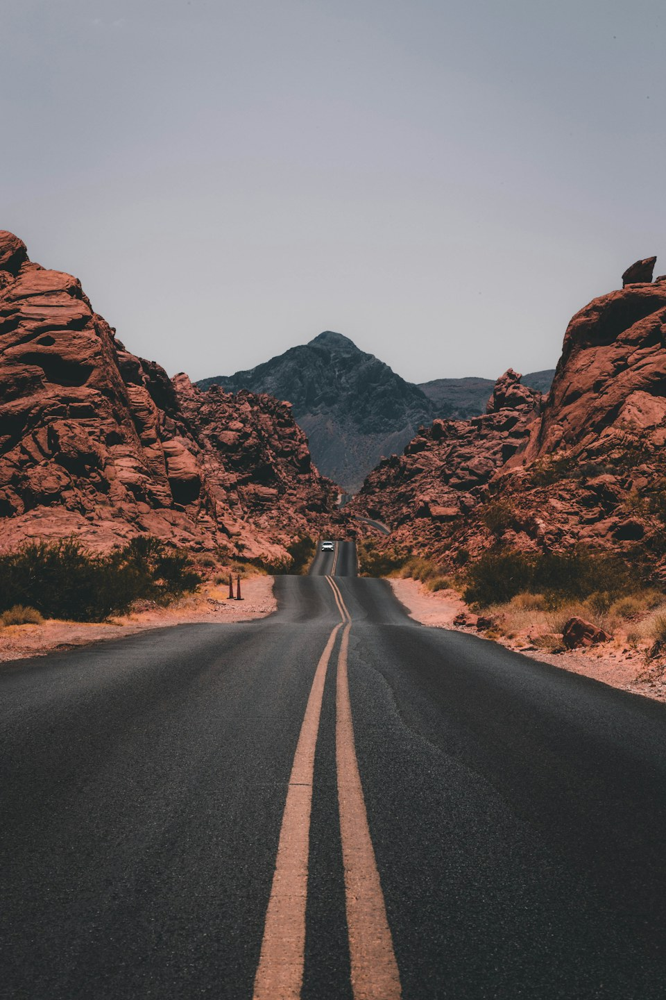

Your movement, your way
What is KathRUN?
A virtual movement challenge. Choose what feels right for you. There is no single way to take part.
A challenge for everyone
Every form of movement counts.
Run, walk, wheel, roll or find another movement that is accessible to you.
- Run
- Walk
- Cycle / ride
- Swim
- Wheel
- Hike
- Row
- Paddle
- Train
- Or any way that's accessible



Illustrative movement photos via Unsplash. These are not KathRUN participants.
Commit to a distance, a time frame or a personal challenge that works for you.
Ask people to sponsor you per mile, kilometre or lap – or with a once-off donation.
Take it one step at a time
How to take part
Not speed. Not performance. Not comparison. Just people choosing to move – together – while they still can.
-
01
Choose your movement
Pick any form of movement that is accessible to you.
-
02
Choose your challenge
Set a distance, time frame or personal challenge.
-
03
Ask for sponsorship
Invite support per mile, kilometre or lap, or as a once-off donation.
-
04
Move visibly
Wear your KathRUN gear, share your effort and start conversations.
-
05
Donate through BackaBuddy
All donations go through the official BackaBuddy page.
Show the movement
Share your KathRUN
Wear your gear, share your effort and start a conversation. Find the share buttons and community gallery.